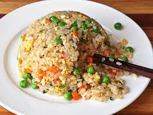

Fried Rice Recipe
Home Page

Fried rice is a dish mostly used to cook off any leftovers in the fridge.
Typical fried rice at home consists of leftover rice, any protein, eggs
and vegetables that need to be used. In restaurants, the most common types
of fried rice include egg fried rice, pork, beef or shrimp fried rice.
Tools / Utensils to make Egg Fried Rice
- Carbon steel wok or Non-stick skillet
- Spatula or Cooking chopsticks for stirring
- Sharp knife if not using pre-diced ingredients
Ingredients to make Egg Fried Rice
- 1 cup of leftover chilled, cooked rice
- 2 eggs, whisked
- 1/4 cup of carrot, diced
- 1/4 cup of peas
- 1/4 cup of onion (any), diced
- 2 cloves garlic, minced
- High-smoke point oil (avocado,peanut,canola,etc)
- 1 tblspn of sesame oil
- 1 tblspn of oyster sauce
- Salt
- Pepper
- Bouillon cubes or MSG
Optional Ingredients
- 1 Green onion, thinly sliced along length
- 1/2 cup of Shaoxing wine, or any dry sherry
Steps to cook Fried Rice
- If using carbon steel wok, heat on high heat until smoking
- Add 1 tblspn high-smoke point oil, and wait until oil is shimmering
- Add the whisked eggs, scrambled until desired doneness and set aside
- Add 2 tblspn high-smoke point oil, and wait until oil is shimmering
- Add onions and carrots, stirfry until onion starts to become translucent, a few minutes
- Add minced garlic, and salt, pepper, msg to taste
- Wait until garlic become aromatic, 10-20 seconds, and add rice
- Use spatula to break up rice clumps
- Stir and mix ingredients well, few minutes
- Add oyster sauce and shaoxing wine
- Continue stirfrying ingredients for a few minutes
- Add sesame oil and sliced green onion, stirfry for another 30 seconds
- Move fried rice to dish